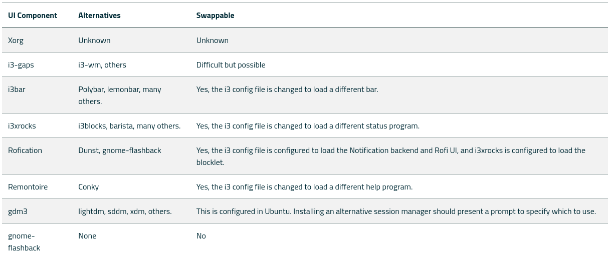

Regolith
Suatu hari pc saya sudah diperbaiki setelah lamanya saya menggunakan laptop, dan karena saya butuh pc saya untuk bisa siap dengan cepat tanpa harus masuk kedalam setup-hell, akhirnya saya langsung saja install ubuntu yang cepat dan simple.
Tetapi jiwa customization saya tetap teriak untuk bisa mengcustomize ubuntu ini dan juga dikarenakan kecintaan saya terhadap tiling window manager dibanding desktop window manager memang tidak bisa dihentikan lagi...
Lalu saya mencari dan mencari tentang tiling window manager yang bisa saya install cepat didalam ubuntu nya (karena saya tetap harus fokus kedalam kerjaan saya pada saat itu).
Dan saya menemukan regolith, saya sangat senang telah menemukan ini dikarenakan customization yang cukup simple dan juga tiling wm yang langsung terpakai begitu saja
Jadi, apa itu regolith ?
Regolith menggunakan i3 sebagai tiling wm backend nya dan dengan kombinasi fitur fitur lainnya yang memang sering saya gunakan disaat ricing arch linux saya, jadi bisa dibilang saya sudah sangat familiar dengan komponen-komponennya.

sumber: regolith-doc
Regolith vs Native i3
Menurut saya jika perbandingannya dengan i3 nya itu sendiri maka jelas kita akan lebih leluasa dalam meng-customize tampilan serta seluruh konfigurasi yang diinginkan didalam sistem kita.
Tetapi ini balik lagi kepada urgency dan kebutuhan dari penggunanya, dan jika saya sedang memiliki waktu yang sangat kosong maka akan saya gunakan i3 dan bahkan install lagi arch linux serta rice seluruh konfigurasi nya.
Last word
Semoga artikel nya mudah dipahami dan menyenangkan, jika memang dirasa bermanfaat silahkan sebarkan kepada yang lainnya agar ilmu nya tidak berhenti disini saja.
Terimakasih kepada Allah SWT dan juga para pembaca disini, semua yang buruk datangnya dari saya dan yang baik hanya datang dari-Nya, mohon maaf bila ada kesalahan 🙏.